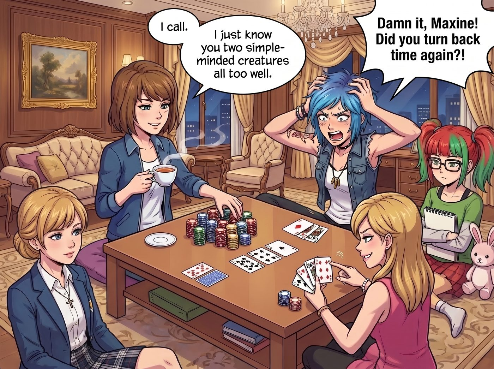

沒有超能力的贏家

在這間由 Lily 靠合規審查「白嫖」來的拉斯維加斯頂級總統套房裡，面對著賭場贈送的訂製金箔撲克牌和一整箱籌碼，五個人為了打發無聊的夜晚，在鋪著天鵝絨的茶几上展開了一場娛樂性質的德州撲克。
這場牌局完美地折射出了這條二號車廂食物鏈的底層邏輯。
一、四人的德州撲克風格
1. Chloe：狂戰士與送分童子（ATM） Chloe 看過太多好萊塢黑幫電影，以為德州撲克就是比誰講話大聲、誰敢把籌碼全推出去。她永遠在詐唬（Bluffing），手裡拿著一對 2 也敢喊「All-in」，並且試圖用極具攻擊性的垃圾話來干擾對手。 結果：她的臉部表情極度豐富，一拿到好牌眉毛就會挑起，拿到爛牌就會下意識地抖腳。她是全場最快輸光籌碼的人，最後只能靠「賒帳」或者偷拿 Max 的籌碼繼續玩。
2. Victoria：心理戰與資本碾壓（Bully） 名媛的風格是典型的「籌碼壓制」。她非常擅長心理戰，會用尖酸刻薄的言語去挑釁對手，尤其喜歡針對 Chloe。當她籌碼領先時，她會瘋狂加註（Raise），試圖用「資本的厚度」逼迫別人蓋牌。 結果：她能輕易碾壓 Chloe，但一旦面對完全不受情緒影響的對手（比如 Lily），她的心理戰就會像打在棉花上一樣無力，最後因為上頭（Tilt）而犯下致命錯誤。
3. Kate：透明人與絕對道德結界（The Angel） Kate 根本不會說謊。當她拿到爛牌時，她會直接嘆氣並蓋牌（Fold）；當她拿到好牌時，她會用充滿歉意的眼神看著大家：「那個……我的牌好像很好，大家還是不要下注了，免得輸錢……」 結果：沒有人能贏 Kate 的錢。因為當 Kate 真的下注時，大家就會知道她手裡絕對是無敵的牌（Nuts），然後紛紛蓋牌。更可怕的是，如果 Chloe 或 Victoria 試圖詐唬贏了 Kate 的籌碼，她們會面臨良心的極度譴責，最後在小天使純潔的目光下主動把籌碼退回去。
4. Lily：毫無感情的博弈論機器（GTO） 實習生打牌既不看人，也不看氣氛，她只看數學。 她的大腦裡裝載了完整的「德州撲克博弈論最優策略（GTO）」。她不說廢話，沒有表情，每次下注前都會推一下圓框眼鏡，然後用平靜的語氣報出數據：「根據底池賠率（Pot Odds），我只需要 28% 的勝率就能跟注。而我目前擊中同花的機率是 34.7%，這是一個正期望值（+EV）的行為，所以我 Call（跟注）。」 結果：Lily 就像一台冰冷的收割機，不帶一絲情緒地、一分一分地榨乾牌桌上的每一個籌碼，讓這場娛樂局變成了殘酷的數學考試。
二、Max 不用超能力，能贏嗎？
答案是：她不僅能贏，而且會活到最後，成為唯一能與 Lily 抗衡的人。
如果剝離了時間倒流的超能力，大家往往會忘記 Max 的本職身份——她是一名極度優秀的攝影師。攝影師最可怕的武器，不是相機，而是那雙捕捉細節的眼睛。德州撲克本質上是一個關於資訊不對稱和微表情的遊戲。而 Max，是一個常年躲在鏡頭後面、安靜觀察周遭一切的內向者。她太了解這個車廂裡的每一個人了。
牌局進行到中場時，發完河牌後，底池已經很大。Chloe 死死盯著 Max，Victoria 也在冷笑，而 Lily 面無表情。
Max 雙手捧著一杯熱茶，平靜地環視了一圈。她的眼睛就像高倍率的鏡頭，瞬間捕捉到了所有的細節：Chloe 剛才下注的時候，左手無意識地摸了一下脖子上的子彈項鍊，這是她心虛時的標準動作，絕對在詐唬；Victoria 的法式美甲在茶几上敲擊的頻率變慢了，她平時拿到必勝牌時呼吸會變輕，但現在呼吸很重，說明她在虛張聲勢；至於 Kate，早在翻牌前就滿臉歉意地蓋牌了。
於是，Max 微微一笑，把籌碼推了出去。「我跟。」
Chloe 和 Victoria 雙雙掀開底牌——全都是破綻百出的垃圾牌。Max 僅憑一對 10，就輕鬆收下了巨大的底池。
「見鬼了 Maxine！」Chloe 崩潰地抓著頭髮，「妳是不是又倒轉時間了？！」
「我發誓我沒有，Price。」Max 喝了一口茶，眼神慵懶且自信，「我只是太了解妳們這兩條把底牌寫在臉上的單細胞生物了。」
三、最終的僵局
這場牌局的最後，必然會演變成 Max 和 Lily 的單挑。這是一場極致的微表情觀察與極致的數學機率計算的對決。
Max 試圖去觀察 Lily，但她絕望地發現，這個十九歲的實習生根本沒有微表情。Lily 呼吸均勻，眨眼頻率恆定，完全就是一個披著人皮的 Excel 表格。而 Lily 也發現，自己完美的期望值計算，總是會被 Max 那種難以用數學解釋的「直覺蓋牌」給化解。
最後，這場牌局在凌晨兩點因為過度消耗腦力而宣告終止。
籌碼最多的是 Lily，緊跟在後的是 Max。Chloe 已經破產並在沙發上睡著了，Victoria 氣得回房間敷了三片頂級面膜，而 Kate 則在一旁開心地幫大家烤了宵夜餅乾。
Max 揉著酸痛的太陽穴，看著正在把籌碼按顏色和面值精準排列成矩陣的 Lily，發出了一聲由衷的感嘆：「我寧願回到龍捲風裡去面對那些物理災難，也不想再跟一個沒有感情的機率計算器打德州撲克了。」